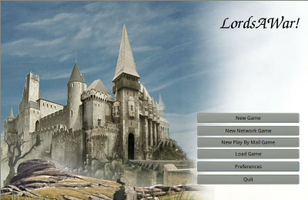

LordsAWar
Archivierte Anleitung
Dieser Artikel wurde archiviert, da er - oder Teile daraus - nur noch unter einer älteren Ubuntu-Version nutzbar ist. Diese Anleitung wird vom Wiki-Team weder auf Richtigkeit überprüft noch anderweitig gepflegt. Zusätzlich wurde der Artikel für weitere Änderungen gesperrt.
Zum Verständnis dieses Artikels sind folgende Seiten hilfreich:
LordsAWar!  ist ein Open-Source Klon des Strategiespiels Warlords II. Das Spiel kann entweder alleine gegen einen oder mehrere Computergegner unterschiedlicher Spielstärke gespielt werden, über Emails oder mit mehreren Leuten im Netzwerk. Es können jedoch maximal acht Spieler an einem Spiel teilnehmen.
ist ein Open-Source Klon des Strategiespiels Warlords II. Das Spiel kann entweder alleine gegen einen oder mehrere Computergegner unterschiedlicher Spielstärke gespielt werden, über Emails oder mit mehreren Leuten im Netzwerk. Es können jedoch maximal acht Spieler an einem Spiel teilnehmen.
Das Ziel des Spiels ist es, die Gegner zu vernichten. Dazu können Städte erobert, Helden und Truppen angeheuert und Aufgaben erledigt werden. Die Städte erzeugen Einkommen und Truppen kosten Goldstücke.
Das Spiel ist zwar auch in der aktuellen Ubuntu Version (Trusty Tahr) noch in Paketquellen verfügbar. Doch das Spiel lässt sich nicht mehr starten.
|  | |
| Menü | Spielszene |
Installation¶
Projektseite¶
Die neueste stabile Version kann auf LordsAWar! bezogen werden.
Paketquelle¶
LordsAWar! ist über die Paketquellen verfügbar [1]:
lordsawar (universe)
 mit apturl
mit apturl
Paketliste zum Kopieren:
sudo apt-get install lordsawar
sudo aptitude install lordsawar
Das Programm ist dann unter "Anwendungen -> Spiele -> LordsAwar" zu finden.
Debian-Pakete¶
Die neuesten .deb-Pakete können von cdn.debian.net heruntergeladen werden. Dabei muss zuerst lordsawar-data_VERSION_all.deb und dann lordsawar_VERSION_ARCHITEKTUR.deb installiert werden.
Kompilieren¶
Hinweis!
Zusätzliche Fremdquellen können das System gefährden.
Wenn man sich die neueste stabile Version von LordsAWar selbst erstellen will, geht man folgendermaßen vor [2]:
Auf www.lordsawar.com
gehen und die stabile Version lordsawar-version.tar.gz herunterladenMit der Konsole in das Download-Verzeichnis gehen
Folgende Pakete installieren:
automake
autoconf
libtool
m4
autotools-dev g++
libsigc++-2.0-dev
libglibmm-2.4-dev
libgtkmm-2.4-dev
gettext
subversion
libsdl1.2-dev
libsdl-image1.2-dev
libsdl-mixer1.2-dev
libglademm-2.4-dev
libgnet-dev
libboost-dev
uuid-dev
intltool
cvs
libtar-dev
mit apturl
Paketliste zum Kopieren:
sudo apt-get install automake autoconf libtool m4 autotools-dev g++ libsigc++-2.0-dev libglibmm-2.4-dev libgtkmm-2.4-dev gettext subversion libsdl1.2-dev libsdl-image1.2-dev libsdl-mixer1.2-dev libglademm-2.4-dev libgnet-dev libboost-dev uuid-dev intltool cvs libtar-dev
sudo aptitude install automake autoconf libtool m4 autotools-dev g++ libsigc++-2.0-dev libglibmm-2.4-dev libgtkmm-2.4-dev gettext subversion libsdl1.2-dev libsdl-image1.2-dev libsdl-mixer1.2-dev libglademm-2.4-dev libgnet-dev libboost-dev uuid-dev intltool cvs libtar-dev
Folgende Befehle ausführen [3]:
tar zxvf lordsawar-*.tar.gz cd lordsawar-* #benötigt etwa eine Minute: ./configure --prefix=/usr #benötigt etwa 45 Minuten: make #benötigt weniger als eine Minute: sudo make install
Wenn man sich die neueste Entwicklungsversion installieren will, muss folgendes gemacht werden:
svn co svn://svn.savannah.nongnu.org/lordsawar cd lordsawar/lordsawar/trunk/ ./autogen.sh aclocal -I m4 ./configure --prefix=/usr make sudo make install /usr/bin/lordsawar
Einstieg in das Spiel¶
Ein Spiel starten (offline)¶
Über "Neues Spiel → Zufälliges Szenario" kann schnell ein Spiel begonnen werden.
Steuerung¶
Das gesamte Spiel kann über die linke Maustaste gesteuert werden. Manche Funktionen sind jedoch zusätzlich auch durch Tasten zu erreichen:
| Tastenkürzel | |
| Taste(n) | Funktion |
 | Wählt eine Einheit/ Stadt aus |
| A | Armee-Bericht |
| B , C oder P | Stadt-Bericht |
| G | Gold-Bericht |
| I | Festlegung der Kampfreihenfolge |
| K | Stadtbericht |
| L | Bericht über die Triumpfe der einzelnen Spieler |
| N | Produktionsbericht |
| L | Bericht über die Triumpfe der einzelnen Spieler |
| O | Hilfeseite mit Armee-Boni |
| R | Spiel beenden |
| T | Hilfeseite mit Gegenstands-Boni |
| U | Übersichtsseite der Helden |
| V | ? |
| W | Punktzahl der Spieler |
Häufige Fehler und Warnungen¶
Startet man LordsAWar mit der Konsole, tauchen folgende Fehler häufig auf.
(lordsawar:19424): Gdk-CRITICAL **: _gdk_pixmap_new: assertion `(drawable != NULL) || (depth != -1)' failed (lordsawar:19424): GLib-GObject-CRITICAL **: g_object_ref: assertion `G_IS_OBJECT (object)' failed (lordsawar:19424): GLib-GObject-CRITICAL **: g_object_unref: assertion `G_IS_OBJECT (object)' failed (lordsawar:19424): GLib-GObject-CRITICAL **: g_object_unref: assertion `G_IS_OBJECT (object)' failed
Das stört beim spielen allerdings nicht weiter und kann vom Spieler auch nicht behoben werden.
Das Netzwerkspiel ist momentan noch sehr fehlerbehaftet.
Der Fehler
Couldn't find any armysets (*.lwa) in : /usr/local/share/lordsawar/army/ Please check the path settings in ~/.lordsawarrc
kann behoben werden, indem die Pfadeinstellungen in ~/.lordsawarrc behoben werden:
1 | <d_datapath>/usr/share/lordsawar</d_datapath> |
ist wahrscheinlich
1 | <d_datapath>/usr/share/games/lordsawar</d_datapath> |
Er tritt eventuell nach einer manuellen Installation auf.
Infobox¶
| LordsAWar | |
| Originaltitel: | LordsAWar |
| Aktuelle Version: | 0.2.0 (Stand: 19. April 2011) |
| Genre: | Rundenbasiertes Strategiespiel |
| Sprache: | Deutsch  , Englisch , Englisch |
| Grafik: | 2D |
| Veröffentlichung: | 2011 |
| Läuft: | nativ |
- Erstellt mit Inyoka
-
 2004 – 2017 ubuntuusers.de • Einige Rechte vorbehalten
2004 – 2017 ubuntuusers.de • Einige Rechte vorbehalten
Lizenz • Kontakt • Datenschutz • Impressum • Serverstatus -
Serverhousing gespendet von